Side projects · 2026
AI experiments
Things I build with AI to see what happens. No brief, no client, just for fun.
01 · Asteroid Blaster · Canvas
Resistance is futile.
When someone’s done reading, I want something here they can play instead, so the last thing they do isn’t more scrolling.
A survivor-style roguelite over whatever page you launched it from. The phasers fire automatically, so the helm is the only control, and each time the dilithium rail fills you choose one of three upgrades.
It needed a test rig to balance. Every warbird kill used to drop a hull point, which put the net rate at 0.00 lives a minute, so no run could ever end. Playing it never felt wrong, but the numbers were.
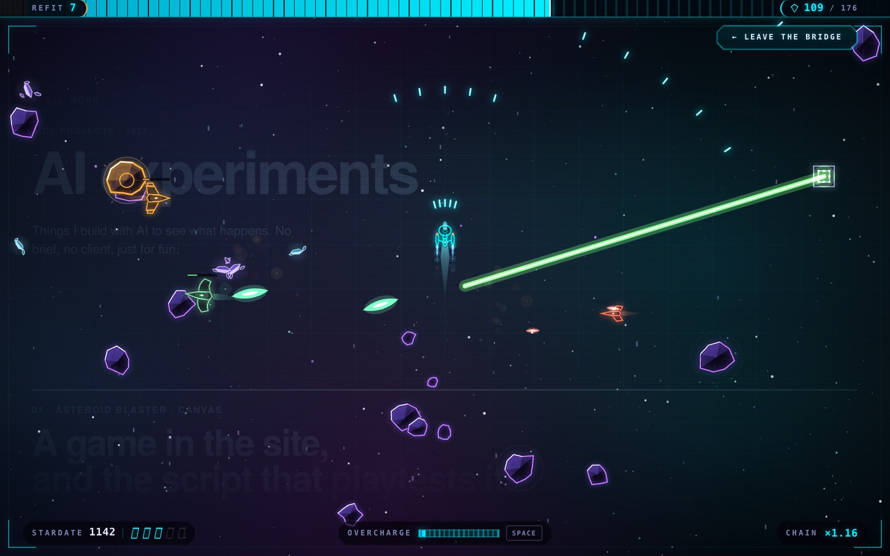
Refit 7, four factions on screen. This page is still underneath
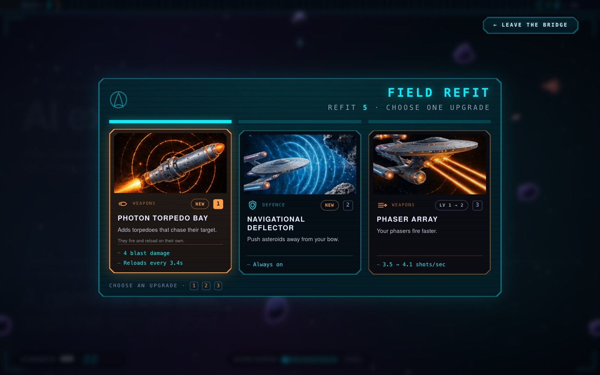
Fill the dilithium rail, pick one of three
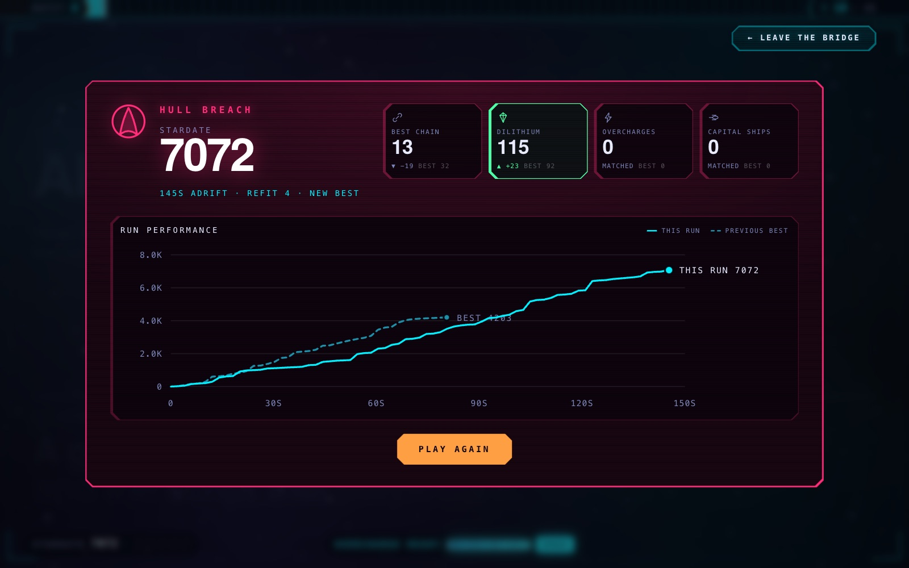
Every run ends on the one before it
02 · Erntereif · React
A seasonal calendar for
what is actually growing near you.
When I’m food shopping, I want to know what’s genuinely in season here right now, so I can buy that instead of something flown in out of season.
87 crops, five countries, German interface. Pick a month and it shows what’s being harvested, what’s out of cold store, and what the imported version costs in carbon. React and TypeScript. All 87 images are cut from one generated contact sheet, so they share a light and an angle.
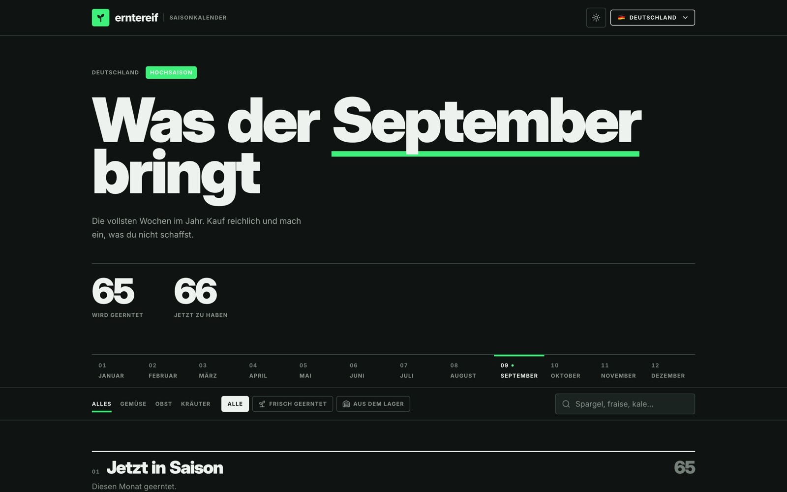
September in Germany. 65 varieties harvested, 66 available once cold store counts
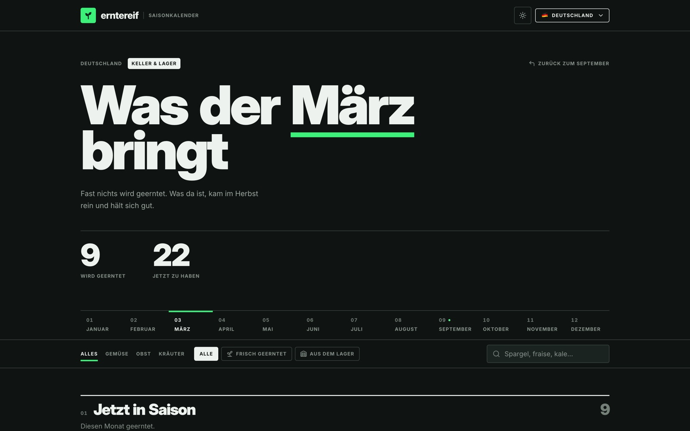
March, the same page. Nine harvested against September’s 65
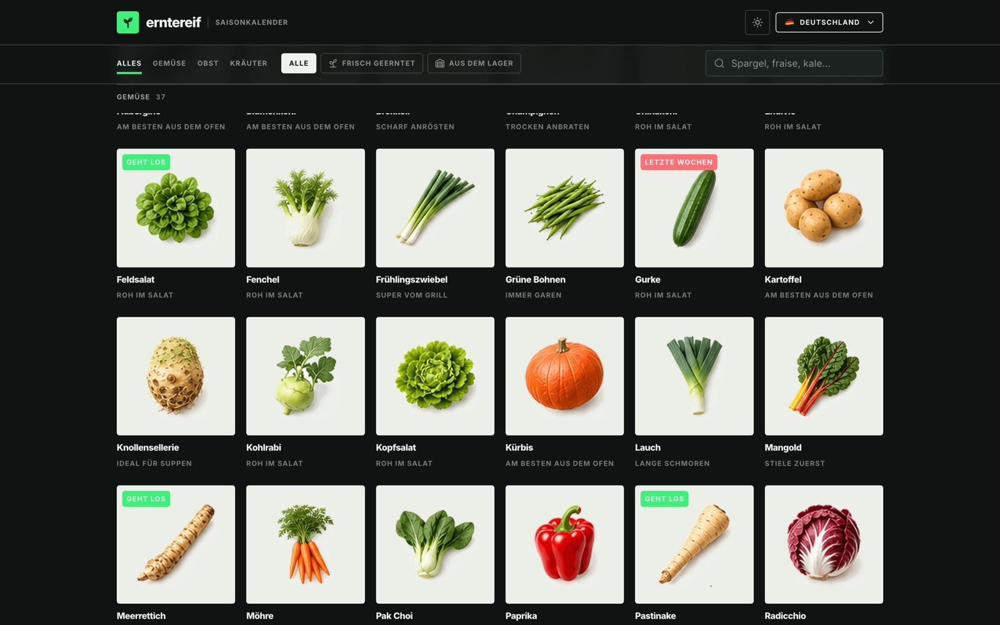
Every crop carries a cooking note
03 · Tanken · SwiftUI
Fuel prices, and whether
to fill up now or wait.
When I drive past a petrol station, I want to know whether today’s price is a good one, so I don’t fill up the day before it drops.
German stations have had to report their prices publicly since 2013, so Tanken reads that feed: today’s average, how it got there, the five biggest chains ranked cheapest first, and a guarded outlook for tomorrow. SwiftUI, one screen, no tab bar.
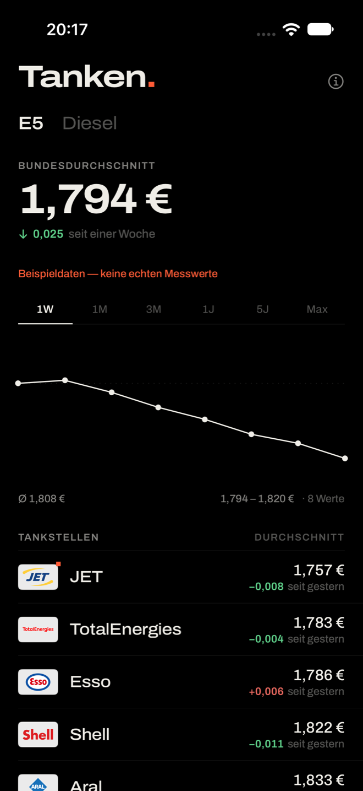
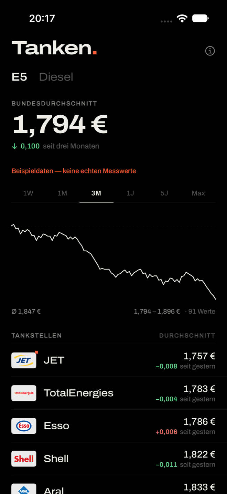
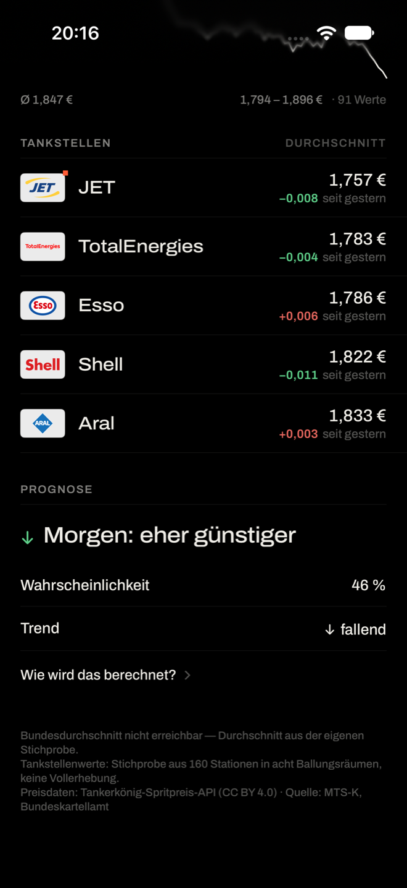
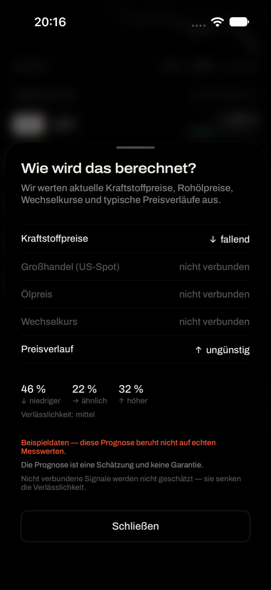
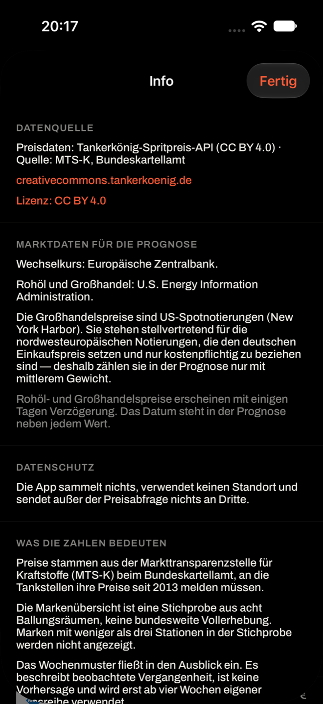
AI, honestly
Quick, and not quite there.
All three were built with Claude Code. It gets you something running fast, and that is genuinely useful: none of these would exist otherwise. Getting from running to the thing I actually wanted took a lot of back and forth.
I’m still working out where that line sits. Quick is real. So is the arguing.
Enough tinkering →
Back to the real work